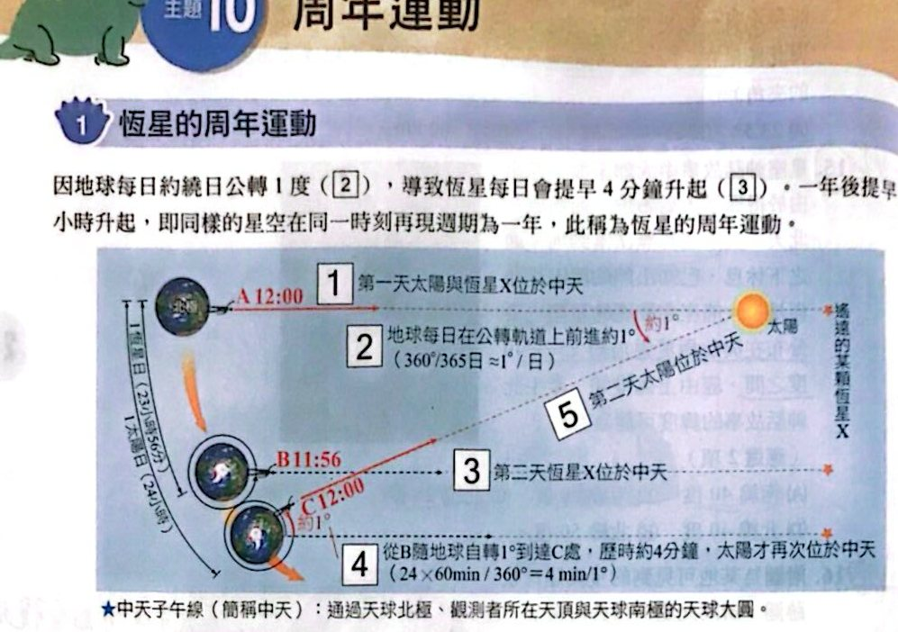
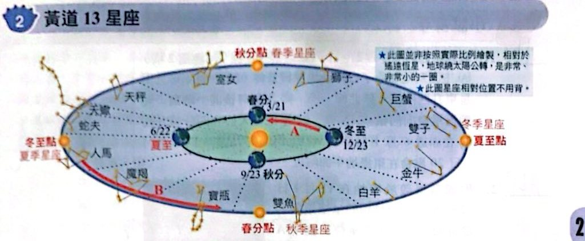
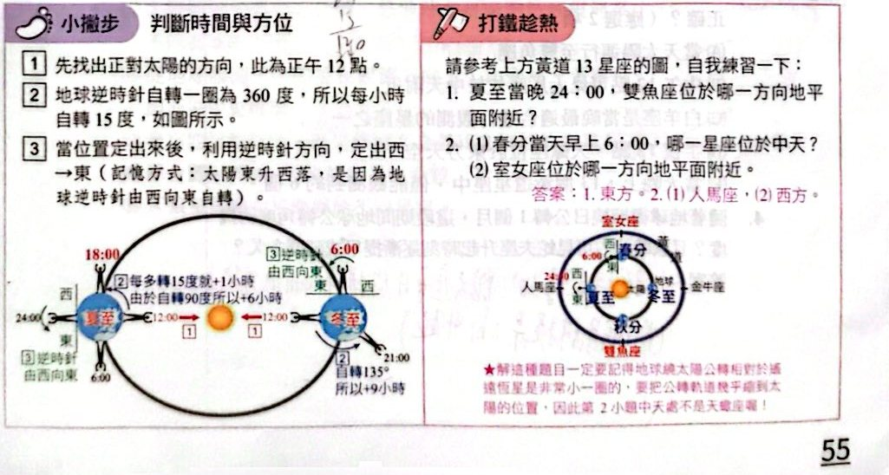

恆星的周年運動

恆星的周年運動：每天提早 4 分鐘升起（講義 p.54）
黃道 13 星座

黃道 13 星座與地球公轉（講義 p.55）

小撇步：判斷時間與方位；打鐵趁熱（講義 p.55）
小試身手
看答案與詳解收起
答(A)(C)
解這題在考什麼：周年運動的原因是地球公轉；每天恆星提早約 4 分鐘升起、同一時刻往西偏約 1°。
- (A) ○ 主因是地球除了自轉外也繞日公轉。
- (B) ✗ 一天（自轉）繞天球北極一圈；「一整年」是周年運動，不是繞一圈。
- (C) ○ 半個月＝15 天，每天偏西約 1° ⇒ 同一時刻同顆恆星向西偏移約 15 度。
- (D) ✗ 是提早四分鐘升起（不是晚）。
- (E) ✗ 3 個月後同一時刻會往西偏約 90°，原本在頭頂的星會在西邊地平面附近，不是東邊。
看答案與詳解收起
答(A)(C)(D)
解這題在考什麼：星體周日運動（朝北看逆時針）＋周年運動（同一時刻，每月偏西約 30°）。圖中 A、B、C、D、E、F 各相隔 60°，A 在上。
- (A) ○ 半年後同一時刻，周年運動偏西 180° ⇒ 從 A 到對面的 D 位置。
- (B) ✗ 地方時相同的位置星空相同；與經度時差無關，1 個月前同一地方時（22 時）應在 A 往順時針方向約 30° 處（A、B 之間），不是 A 處。
- (C) ○ 11 月 1 日 18 時比 22 時早 4 小時＝早 60°，往順時針退回 60° ⇒ 從 A 到 B。
- (D) ○ 地球不再繞日公轉，就沒有周年運動，同一時刻星空每天都一樣，3 個月後 22 時仙后座仍在 A。
- (E) ✗ 北極星仰角＝緯度，圖中無法確定緯度為 25°。
看答案與詳解收起
答(A)(D)
解這題在考什麼：春分時太陽位於雙魚座方向（圖中 3 月地球看太陽的方向）；夜晚看到的是與太陽相反方向的星座（室女座、天秤座…）。
- (A) ○ 春分當天太陽運行至雙魚座。
- (B) ✗ 人馬座在太陽約 90° 的方向，中午時看不到（太陽在天上，且人馬座距太陽 90° 不在中天）。
- (C) ✗ 白羊座在太陽旁邊，與太陽同時升落，不適合夜間觀測。
- (D) ○ 半夜 12 點室女座（與太陽相反）在中天，天蠍座在其東邊約 60° ⇒ 位於東方天空。
- (E) ✗ 夜間約可看到 8～9 個星座，不是 6 個。
看答案與詳解收起
答地球約公轉 30°；蛇夫座每日約提早 4 分鐘升起（1 個月約提早 2 小時）
解這題在考什麼：地球每日公轉約 1°，1 個月約 30°；恆星每日提早 4 分鐘升起，30 天約提早 120 分鐘＝2 小時。
看答案與詳解收起
答(A)(D)
解這題在考什麼：甲、乙兩地經度相同、緯度不同；織女星的赤緯約 +39°，從兩地觀測的升落軌跡不同。
- (A) ○ 甲地可見織女星高掛、軌跡繞天球北極，位於北半球。
- (B) ✗ 乙地看織女星升落的弧度較短、偏向南邊天空，乙地位於南半球。
- (C) ✗ 甲地位於北半球、乙地位於南半球，甲在乙的北邊。
- (D) ○ 兩地緯度數值相近（一北一南）。
- (E) ✗ 甲地織女星在地平面上的弧度較長（北半球緯度較高），時間較長。
看答案與詳解收起
答(E) 兩地織女星移動軌跡與 8 月 10 日一樣
解這題在考什麼：恆星在天球上的位置是固定的，不同季節只影響升起的時間，不會改變軌跡（軌跡由緯度決定）。
看答案與詳解收起
答(B)(E)
解這題在考什麼：銀河中心方向是人馬座，夏季夜晚朝向銀河系中心看（圖 a：牛郎星、織女星），冬季朝向外圍盤面看（圖 b：南河三、參宿四、天狼星）。
- (A) ✗ 冬夏兩季見到銀河系不同區域的主因是地球繞太陽公轉，造成夜晚朝向不同方向，不是太陽繞銀河系中心公轉。
- (B) ○ 圖 a 的牛郎星在銀河系中心方向，比圖 b 的南河三更靠近銀河系中央核球。
- (C) ✗ 參宿四是紅色因為表面溫度低，且它是銀河系內的恆星（肉眼可見的恆星都在銀河系內），不是系外正在紅移的恆星。
- (D) ✗ 我們在銀河系內，無法看見銀河系全貌。
- (E) ○ 天狼星在大犬座，織女星在天琴座，屬不同星座。